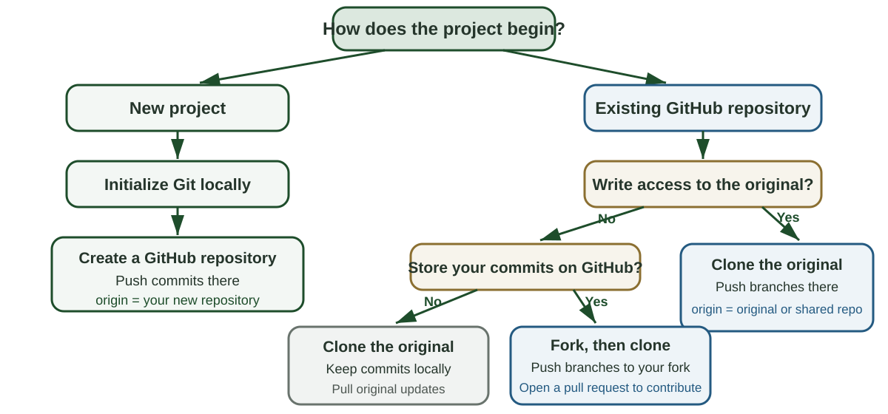
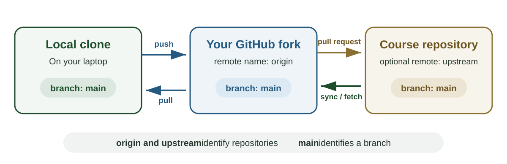

Lecture 5.4: Managing Data for Reproducibility: Git II
AREC 570 / ECON 530 / Unit 5
Reading and sequence
Gentzkow and Shapiro, Code and Data for the Social Sciences, Sections 5-8 and the Code Style appendix (Gentzkow and Shapiro 2014)
- Distinguish cloning, forking, and repository permissions
- Follow one research task through a branch, pull request, review, and merge
- Use keys, abstraction, documentation, management, and code style to make the task reviewable
- Apply the workflow to a current research project
Where we left off
Lecture 5.3 established a version control workflow for an individual research project
- Organize the project around inputs, code, and outputs
- Use Git to record local commits
- Use GitHub to share the repository
- Clone an existing team repository when you have access
We stopped before Case 3: fork public or course work
Choose how the project reaches your computer

Clone creates the local working repository
Cloning creates a complete local Git repository from a remote repository
- The clone includes the files and commit history
- Git names the source repository
origin
- A commit records a version in the local repository
- Fetch and pull bring later updates from
origin
- Push copies local commits to
origin when your GitHub account has write access
The clone records the remote repository as origin so Git knows where to fetch, pull, and push
The remote repository’s permissions determine whether GitHub accepts a push
A fork is your GitHub copy of the original repository
GitHub creates the fork under your account and records which repository it came from
- Clone the fork to create the local working repository
- The local name
origin points to your fork
- Push sends your local commits to your fork
- A pull request asks the original repository’s owners to accept your commits
- Sync or fetch can bring later changes from the original repository into your work
Your fork and the original remain separate repositories
Case 3: contribute without write access
You plan to make changes to the course repository and lack write access to it
- Fork the course repository on GitHub
- Clone your fork to the computer
- Create a branch, commit, and push to your fork
- Open a pull request if you want to propose the changes to the course repository
- Bring later course updates into the fork when needed
The course repository changes only when its owner accepts and merges a pull request
Follow along: fork the demo
Open github.com/laurenchenarides/arec_570_demo while signed in
- Select Fork
- Clear Copy the main branch only so the lecture tags are included
- Select Create fork
- Confirm the address is
github.com/your-username/arec_570_demo
Your fork remains linked to the course repository for later synchronization
Follow along: clone your fork
- On your fork, select Code and copy the HTTPS URL
- In RStudio select File > New Project > Version Control > Git
- Paste the URL and choose a parent folder such as
GitProjects
- Select Create Project
- Confirm the project name appears in the upper-right corner
- Confirm a Git tab appears beside Environment and History
The local repository’s origin points to your fork
Origin, upstream, and main

Read the three names in this exercise
main |
Branch name |
The primary line of accepted commits in each repository |
origin |
Remote nickname |
The GitHub repository that was cloned, here your fork |
upstream |
Remote nickname |
The original repository, added manually for terminal synchronization |
Use git remote -v to see which remote nicknames exist locally
Update a fork through GitHub
On your fork’s GitHub page
- Select Sync fork
- Select Update branch when updates are available
GitHub copies accepted commits from the original repository’s main into your fork’s main
Changes on a separate branch do not interfere with synchronizing main
In RStudio
- Switch to
main
- Select Pull in the Git pane
- Confirm Git reports that local
main is current
Update a fork through the terminal
Add the original repository as upstream once
git remote add upstream https://github.com/laurenchenarides/arec_570_demo.git
git remote -v
Bring later updates into local main, then update the fork
git fetch upstream
git switch main
git merge --ff-only upstream/main
git push origin main
Pull and push synchronize commits
Pull brings commits from the current branch on origin into the local branch
Push sends local commits from the current branch to the matching branch on origin
When GitHub contains newer commits
- Pull the remote commits
- Review any conflict Git reports
- Complete the merge when required
- Push the combined history
Create a branch from current main
In the RStudio Git pane
- Confirm the branch menu shows
main
- Select New Branch
- Name the branch
add-daily-panel
- Keep Sync branch with remote selected
- Select Create
The terminal equivalent is
git switch -c add-daily-panel
git push -u origin add-daily-panel
Work and commit on the branch
- Edit the files required by the task
- Run the relevant scripts and inspect the outputs
- Inspect the diff in the RStudio Git pane
- Stage the files that belong to the task
- Commit with a message that describes the research change
- Push the branch to GitHub
Join streamflow and weather by date
Each commit should leave the branch in a state another researcher can inspect
Open a pull request
After pushing the branch, GitHub offers Compare & pull request
- Set the base branch to
main
- Set the compare branch to
add-daily-panel
- Use the deliverable as the title
- Explain what changed and why
- Report how the change was checked
To practice without proposing a change to the course repository, set the base repository to your fork
Review the research change
The Files changed tab shows the exact proposed edits
A reviewer can ask
- Does each table have a clear unit of observation
- Are keys unique and nonmissing
- Does the join use the intended matching relationship
- Do the scripts rebuild the stated outputs
- Are thresholds, units, and missing values documented
- Does the pull request contain one coherent task
Revise through the same branch
Review comments identify a question or requested change on a specific line
The author then
- Edits the branch in RStudio
- Runs the relevant checks
- Commits the revision
- Pushes the branch again
The new commit appears in the same pull request and preserves the review record
Merge, then update local main
After approval on GitHub
- Select Merge pull request
- Delete the remote task branch
Back in RStudio
- Switch to
main
- Pull the merged commits from
origin/main
- Confirm the project runs from the updated
main
- Delete the local task branch when it is no longer needed
When Git reports a merge conflict
A conflict occurs when the branches being combined changed the same part of a file in different ways
- Git pauses the pull or merge
- The Git pane identifies each conflicted file
- The file contains both versions between conflict markers
- The researcher decides what the final file should contain
Git preserves both versions because it cannot determine which edit is correct for the project
Resolve a merge conflict
- Open every file marked as conflicted
- Find each set of conflict markers
- Compare the current and incoming versions
- Keep one version, combine them, or write a new final version
- Delete all conflict markers and save the file
- Run the checks affected by the change
- Stage the resolved files and complete the merge commit
The commit message should summarize the resolution when the choice affects the research record
Collaboration vocabulary
| Branch |
A line of commits for one proposed change |
| Pull request |
A request to review and merge one branch |
| Review |
Comments, requested revisions, or approval |
| Merge |
The operation that adds accepted commits to main |
| Conflict |
Competing edits that require a human decision |
Gentzkow and Shapiro: data and code practices
The reading’s five practices
Gentzkow and Shapiro organize the assigned sections around five practices (Gentzkow and Shapiro 2014)
- Keys state what each row represents
- Abstraction gives repeated logic one maintained implementation
- Documentation records sources, definitions, and decisions
- Management assigns tasks and records their status
- Code style makes the implementation easier to inspect
Keys define the observations
A key is a field or combination of fields that uniquely identifies a row
| Household survey |
One household in one wave |
household_id, wave |
| County panel |
One county in one year |
county_fips, year |
| Parcel transactions |
One recorded sale |
transaction_id |
Cleaned tables should have keys that are unique and nonmissing
Source: Gentzkow and Shapiro (2014), Section 5
Check keys before combining tables
For every table
- State what one row represents
- Identify the field or fields that should be unique
- Check for missing key values
- Check for duplicate key values
Before a join, state whether each key should appear once or many times in each table
After a join, confirm that the resulting rows still represent the intended unit of observation
Keep each table at the level it describes
Keeping data normalized means storing each fact once at its natural unit
| States |
state_id |
One state |
| Counties |
county_id |
One county |
| County population |
county_id, year |
One county in one year |
Store state attributes in the state table and county attributes in the county table
Combine tables when the analysis requires information from more than one level
Source: Gentzkow and Shapiro (2014), Section 5
Abstraction gives repeated logic one definition
Abstraction places a repeated operation in one function or program
- The operation has a descriptive name
- Inputs and outputs are explicit
- Repeated calls use the same maintained implementation
- Changes to the operation are made in one place
Gentzkow and Shapiro recommend abstraction when it removes repetition or clarifies the operation
Source: Gentzkow and Shapiro (2014), Section 6
When should a step become a function?
- Is the same logic repeated in several scripts
- Would one name make the purpose easier to recognize
- Can the inputs and outputs be stated clearly
- Can the function reject invalid inputs with a useful message
- Can the function be checked separately from the full project
Keep a one-time transformation in the script when its direct form is easier to read
Documentation records research decisions
Code names and structure should explain the operation itself
Documentation should record information such as
- The source of a definition or threshold
- The reason for an unexpected choice
- The units and reference period
- A limitation a future user could miss
- The inputs and outputs of each script
Maintain documentation alongside the code it describes
Source: Gentzkow and Shapiro (2014), Section 7
Documentation has different scopes
README.md |
Project purpose and reproduction steps |
| Data dictionary |
Variable definitions, units, and codes |
| Script header |
Purpose, inputs, outputs, and dependencies |
| Lab diary |
Decisions, attempts, and unresolved questions |
| Task record |
Deliverable, owner, status, and completion criteria |
Each layer answers a different question about the project
Management makes responsibility and status visible
Gentzkow and Shapiro recommend a task system with clear ownership and a durable record (Gentzkow and Shapiro 2014)
| Define the task |
Task plan or lab diary entry |
| Assign responsibility |
Named owner in a shared task list |
| State completion criteria |
Checklist in the task plan |
| Record discussion |
Comments attached to the task |
| Track status |
Shared task list |
| Preserve the result |
Link to the completed files or output |
Keep decisions with the task so a collaborator can find them later
Code style supports review
- Give scripts and functions one clear purpose
- Use names that identify the concept and unit
- Make function inputs and outputs explicit
- Separate key calculations from setup code
- Write logical conditions in the form a reader would describe them
- Use consistent naming and indentation across the project
- Return informative errors for invalid inputs
Source: Gentzkow and Shapiro (2014), Code Style appendix
Questions for evaluating a research workflow
- Does every cleaned table have a unique and nonmissing key
- Does each table store information at a consistent level
- Is repeated logic defined in one maintained place
- Can the documentation be kept current as the project changes
- Does every task have an owner, status, and completion criteria
- Can another researcher follow the names and control flow in the code
These questions summarize Sections 5–8 and the Code Style appendix
Apply the ideas to your research
Apply the workflow to your research project
Choose one task you expect to complete next
- What concrete deliverable defines the task
- Who owns the task
- Which inputs or prior decisions it requires
- What conditions define completion
- What branch name describes the change
- Which dataset key or code check matters most
- What evidence a reviewer should inspect
Be prepared to share the task and one completion criterion
Before you leave
Show one of the following
- A branch created for a current research task
- A commit that records a coherent change
- A draft pull-request description for a proposed change
Also identify the key of one dataset used in that task
Summary
Sync, fetch, and pull bring accepted remote commits into the current project history
Branches and commits organize one research task and its version history
Pull requests and review make proposed changes visible before they enter main
Keys and explicit join relationships protect the unit of observation
Abstraction, documentation, management, and code style make research changes easier to inspect and reuse